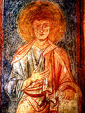

ибо они насытятся»
Мф.5:6
В 2011 году по решению ЮНЕСКО мировая общественность должна праздновать 1000-летие со дня основания святой Софии Киевской. Но, это важное для нас событие омрачено развернувшейся в прошлом году дискуссией, главным образом, между двумя признанными и уважаемыми научными авторитетами, с одной стороны академиком НАН Украины П.П. Толочко, а с другой – доктором исторических наук, заведующей отделом научно-исторических исследований Национального заповедника «София Киевская» Н.Н. Никитенко. Дискуссия вышла за рамки узко научных споров и вылилась в разного рода обращения к общественности на страницах газет «Новая», «Левый берег», «Зеркало недели», «День», «2000» и в ряде интернет изданий. Более того, спор вышел на международный уровень и дело дошло даже до обращения в ЮНЕСКО с просьбой отменить празднование. Суть разногласий изложена кратко в газете «Новой» 15 февраля 2010 г., как Pro и Contra:
«Pro...
— До сих пор при определении сроков возведения храма ученые опирались на летописи,- рассказала «Новой» г-жа Никитенко.- Но не стоит забывать, что подчас они были написаны тенденциозно и отражали стремление книжников приурочить великие события ко времени правления определенного князя. Ярославу было важно заявить о себе как о легитимном правителе, наиболее достойном наследнике Владимира, умершего в 1015-м. В Киеве он появился в 1016 году и стал самодержцем через 20 лет после смерти брата, Мстислава Черниговского, и заточения другого брата, Судислава Псковского. Летописные даты строительства Софии (1017-1037) искусственно привязаны к этому периоду, дабы увековечить князя как создателя главной древнерусской святыни. Но древнейшие нелетописные источники, «Слово» Иллариона (1022) и хроника епископа Титмара Мерзебургского (1018), свидетельствуют о возникновении Софии во втором десятилетии XI века. Уже тогда тевтонские рыцари, вернувшись из Киева, живописали неземную красоту храма. Митрополит Илларион, современник строительства собора, пишет о том, что Ярослав завершил начинание Владимира, как Соломон - Давида, достроив Иерусалимский собор.
Записки иностранцев Мартина Груневега и Эриха Ляссоты, посетивших Софию в конце XVI в., свидетельствуют, что традиция связывать ее создание с деятельностью Владимира, которого они называют «строителем Софии», бытовала в Киеве несколько столетий. В опубликованном латинском документе 1595 г. из папского архива также утверждается, что именно Владимир основал и одарил митрополичью резиденцию в Киеве. 1011 г. как время основания собора фигурировал в двух его главных надписях: титульной (над входом), появившейся в конце XVI — начале XVII вв., и ктиторской (на арках центрального купола), выполненной в 1640 г. по заказу митрополита Петра Могилы, владевшего материалами соборного архива, сгоревшего в 1697 г. Фото снятой реставраторами в середине ХХ в. ктиторской надписи Могилы с датой «1011 г.» недавно обнаружили в архиве заповедника. Даже в XVIII в. этот год официально признавался временем основания Софии, о чем свидетельствуют опубликованные статистические «Описания Киевского наместничества» 70—80-х гг. XVIII в. Тот же 1011 г. указывается кафедральным писарем Иаковом в составленной им около 1770 г. рукописи, хранящейся в Центральном государственном историческом архиве Киева.
Но главным свидетелем рождения шедевра является… сама София Киевская. Обнаруженные на фресках в разных местах надписи-граффити (1018-1021, 1022, 1028, 1033 и 1036 гг.), опровергают 1037 г. как время основания или завершения строительства. Перечеркивают они и 1017 г.- выходит, что в 1018-1021гг. он уже стоял и был расписан. Сопоставив с этим временем дни освящений Софии, ее закладку датируют воскресеньем 4 ноября 1011 г., а инаугурацию - 11 мая 1018 г. Именно на эти даты выпадали Господни дни, когда она могла быть освящена. Значит, собор был заложен и почти построен Владимиром.
— Подтверждает это и прославление княжеской четы - Владимира и Анны на фресках и мозаиках,- поведал «Новой» Вячеслав Корниенко, ведущий научный сотрудник Софии Киевской.- Считалось, что это семья Ярослава, что никак не согласуется с граффити — его дети родились в 1020-1032 годах, а на портретах они уже взрослые. Лабораторные анализы фресковой штукатурки и поливных плит пола Десятинной церкви и Софии Киевской доказали их полную идентичность. Это свидетельство хронологической близости обоих храмов, построенных «мастеры от Грекъ», призванных Владимиром в конце X в. для возведения Десятинной церкви.
… Contra:
Идею празднования 1000-летия Софии в 2011 г. поддержали в соответствующих министерствах, но не в ведущих научных институтах. Чего тут больше — ученой ревности, обиды на нежелание коллег из Софии поинтересоваться мнением других перед подачей заявки в ЮНЕСКО или искреннего желания установить истину — сказать трудно. Директор Института археологии НАНУ Петр Толочко назвал работу Надежды Никитенко научно-популярной, а «ультрараннюю» дату закладки собора плодом фантазии автора и безответственным эпатажем. По мнению академика, спорить можно только о 1017-1037 гг., причем сам он склоняется к 1017 г., что и обосновал в ряде работ. Главный контраргумент — «Повесть временных лет» (ПВЛ).
— Упомянутая Титмаром Мерзебургским церковь святой Софии была деревянной и позже сгорела. Ее нельзя отождествлять с сооружением, которое заложил и построил Ярослав, - утверждает сын академика — Алексей Толочко, член-корреспондент НАНУ, заведующий Центром исследований истории Киевской Руси Института истории Украины.
Не поддержали «ультрараннюю» датировку и в НИИ памятникоохранных исследований.
— Вызывают большие сомнения даты, приписываемые обнаруженным граффити, - заявил «Новой» Тимур Бобровский, замдиректора по научной работе. — Известно, что в то время они обозначались не цифрами, а буквами со специальными титлами. На некоторых из них титлы отсутствуют».
В храме науки все ученые должны служить верой и правдой Истине, как Божеству. Впрочем, для верующих людей, Бог и есть Истина. Когда сомневающийся Понтий Пилат отправлял Христа на крестную казнь, он вопрошал к Нему, пытаясь выяснить: что есть истина? (Ин. 18:38) Но, Христос ему ничего не ответил. Да и что можно сказать человеку, если рядом с ним стоит Истина, а он Её не видит? Христос принял публичную смерть на кресте, как человек, и на третий день воскрес, как Сын Божий, и явился к своим ученикам при закрытых дверях, и так ходил среди людей, доказывая свое воскрешение, пока на 40-й день не вознесся при большом стечении народа к Богу Отцу. Признание любой истины проходит через все эти три этапа: распятие (критическое обсуждение), воскрешение (приведение неоспоримых доказательств) и вознесение (утверждение). Истина, как и вера в Бога, вещь тонкая и не терпит авторитетных и скорых утверждений. Даже Сыну Божьему понадобилось для ее утверждения 34 года 89 дней и около 15 часов. Христиане считают, что день зачатия (Благовещения) и воскрешения после крестной смерти Христа (Пасхи) совпадал и этот наивысший, литургически замкнутый, праздник назвали Кириепасхой (Пасхой Господней). Фрэнсис Бэкон неслучайно говорил, что «Истина есть дочь времени, а не авторитетов». Истина не утверждается голосованием на собраниях, пусть даже самых именитых ученых, истина утверждается практикой и временем. История науки знает множество примеров, когда один человек оказывался прав, а все, кто его осуждал,– неправы. Истина утверждается долготерпением. Приведенные ниже сведения, например, о крещении Киевской Руси и создании собора святой Софии Киевской, изложенные в скрытых стихах святых отцов нашей Православной церкви Илариона и Кирилла Туровского, ждали критического обсуждения почти 1000 лет!
В основе природы возникшего спора вокруг датировки собора Софии Киевской, на мой взгляд, лежат две основные проблемы: этическая и методологическая.
Первая проблема состоит в том, что недопустимо атеистическими методами, действуя не по христиански (Мф.7:1-2), изучать истоки зарождения христианской культуры при преимущественном отсутствии веры в Бога и в свою неординарную культуру. В конце концов, все это напоминает евангельский сюжет явления Иисуса после воскрешения Фоме Близнецу, названному за это «Фомой неверующим». Во время первого явления воскресшего Иисуса своим ученикам Фомы с ними не было. В Евангелии от Иоанна (20:25-29) читаем: «Другие ученики сказали ему: мы видели Господа. Но он сказал им: если не увижу на руках Его ран от гвоздей, и не вложу перста моего в раны от гвоздей, и не вложу руки моей в ребра Его, не поверю. После восьми дней опять были в доме ученики Его, и Фома с ними. Пришел Иисус, когда двери были заперты, стал посреди них и сказал: мир вам! Потом говорит Фоме: подай перст твой сюда и посмотри руки Мои; и не будь неверующим, но верующим. Фома сказал Ему в ответ: Господь мой и Бог мой! Иисус говорит ему: ты поверил, потому что увидел Меня; блаженны невидевшие и уверовавшие». Нет слов, всякий ученый по определению должен вести себя подобно Фоме неверующему, т.е. все подвергать сомнению и проверять, но при этом всем нам нужно иметь, если не веру, то хотя бы совесть, и не втыкать пальцы в открытые раны только что воскресшего...
Вторая проблема связана с кризисом источниковедения как науки вообще и методологии изучения древнерусских источников, в частности. Новых источников практически нет, а старые изучены одним и тем же методом прямого чтения их с одних исходных позиций. В этом случае споров в принципе не должно быть. Споры могут возникнуть только с появлением нового метода и с изменением исходных позиций. На мой взгляд, исследование древнерусских источников в значительной мере тормозится неверной исходной позицией. ХХ век, пронизанный государственным атеизмом, заметно затормозил осмысление значения для нашей культуры крещения Киевской Руси, создания неканонических собора святой Софии Киевской и «Слова о Законе и Благодати» вместе с «Молитвой» и «Исповеданием веры» Илариона (далее вместе – СЗБ). Безбожие продолжает оказывать воздействие на всю нашу жизнь и науку в том числе.
К сожалению, даже глубоко уважаемый мною академик Д.С.Лихачев (считаю его своим учителем см. «Слово о патриархе русской культуры»), который так много сделал для исследования «Слова о полку Игореве» (далее СоПИ) и древнерусской литературы в целом, по этой же причине пришел к естественному для его времени выводу о том, что в древнерусской литературе не существовало обобщающего жанра. Этот период развития Киевской Руси с XI по XIII век в художественном отношении им был охарактеризован описательно и потому неконструктивно, как эпохи «исторической монументальности» или «монументального историзма». Между тем, при ближайшем рассмотрении оказалось, что изначально древнерусская литература, поэзия, музыка, драматургия, изобразительное искусство и архитектура были исключительно богослужебными, т.е. находились в русле церковного богослужения, подчинялись Типикону, церковному календарю и Божьим заповедям. Таким образом, у нас есть все основания назвать этот период развития культуры Киевской Руси эпохой вселенского (всеохватывающего) богослужения, а обобщающий жанр древнерусской литературы и других искусств – богослужебным.
Совершенно очевидно, что богослужебный подход при исследовании древнерусских произведений оказался явно более конструктивным, ибо дает в руки исследователя новую методику изучения, в частности, новый инструмент анализа формы не только литературных, но и других произведений искусства Киевской Руси на основе богослужебного анализа с использованием таких церковных документов, как Типикон (Устав) и Церковный календарь. В Типиконе описан чин службы, т.е. порядок следования разного типа богослужебных песнопений в циклах суточном, начиная от службы 9-го часа и до литургии, 3-го и 6-го часов, в годовом – от Пасхи до Страстной седмицы перед новой Пасхой, с учетом 12 великих праздников, памятных дат почитаемых святых и мученников, указанных в Церковном календаре.
Применение богослужебного анализа, например, для изучения «Слова о Законе и Благодати» Илариона совместно с «Молитвой» и «Исповеданием веры» позволило выяснить, что по форме это одно из первых произведений нашей культуры использовалось в трех видах служб: литургии, всенощного бдения (в этом случае «Молитва» и «Исповедание веры» менялись местами – для этой цели они и были записаны отдельно), а также как канон Цветной триоди из 8-ми песен. Последний, как византийский канон, обрамлялся акро-, мезо-, и теле-стихами, которые, в свою очередь, могли свиваться по определенным правилам в акромезотелестихи, дающие новую скрытую информацию. При этом каждый отдельный стих составлялся из 13-ти слогов, по числу Апостолов и Христа. Например, таких скрытых стихов в СЗБ Илариона удалось выявить несколько сотен.
Основные выводы из чтения скрытых стихов СЗБ изложены книге «Экзампей» (Николаев, 2005, с.82-120), часть скрытых стихов приведена в книге «Тайны «Слова о полку Игореве» (монографическое исследование)» (Николаев, 2005, 560 с.), (далее «Тайны...»), а также в эссе об Иларионе-Никоне «Основоположник нашей культуры»
Хочу особо подчеркнуть, что книги «Тайны...» и «Экзампей» переданы мною ещё в 2005 г. обеим спорящим сторонам, т.е. настоящая статья не приурочена к случаю, и это дает мне моральное право принять участие в этом споре. Не могу молчать, ибо в этих книгах уже содержатся ответы на главные спорные вопросы, полученные из первых рук, т.е. из трудов Илариона (997-1088), подтвержденные в произведениях Кирилла Туровского (1101-1208), автора СоПИ («Тайны...», с.219-304).
Сожалею о том, что приходиться самому говорить о своем открытии (спорящие стороны по каким-то причинам его не учли), но делаю это не ради себя, а исключительно ради памяти величайшего гения и основателя нашей культуры Илариона-Никона-Бояна, одного из главных ктиторов собора вместе со своей матерью Никой-Ириной-Софией, которую он изобразил в виде Оранты. Иларион написал и исполнил СЗБ в соборе, как всенощное бдение в ночь с 3 на 4 сентября 1031 г., когда по завещанию матери он перенес раку с ее прахом, которую сегодня называют саркофагом Ярослава Мудрого, из Десятинной церкви в собор, названный в честь неё Софией. Здесь у любого ученого возникнут вполне естественные вопросы: откуда известно кто такая Ника-Ирина-София, кто доказал, что Иларион принял имя Никона (пока известна только гипотеза М.Д. Приселкова 1911 г.), где доказано, что Боян СоПИ это Иларион, почему собор назван в честь Ники Софией, откуда такие точные даты, что появился новый какой-то источник или новая методология чтения уже известных текстов?..
На эти закономерные вопросы, отвечу: да, появилась новая методика чтения известных текстов, изложенная мною в «Тайнах...» (с. 43-87). В ней приведены скрытые стихи из византийской, древнеболгарской и древнерусской литературы, полученные на основе одного и того же метода при соблюдении принципа презумпции невиновности текста с перекрестным подтверждением дат. Всего же за 30 лет работы в этом направлении выделено по этой методике около 1200 скрытых стихов. В одном только СоПИ благодаря идеальной стихотворной разбивке текста, выполненной Д.С. Лихачевым, удалось выделить 250 скрытых стихов на 13 слогов в каждом, без корректировки исходного текста.
Новизна указанного открытия очевидна. Ни на одной из научных конференций, проведенных обеими сторонами отдельно в феврале (Н.Н. Никитенко) и апреле (П.П. Толочко) 2010 г., этот подход не обсуждался. Что касается актуальности, то акад. Л.Д. Ландау говорил, что метод важнее открытия, ибо на его основе можно сделать много открытий. В этом нетрудно убедиться, если сравнить все сведения, известные науке о крещении Киевской Руси и создании святой Софии Киевской с тем, что удалось выяснить из богослужебного анализа СЗБ Илариона. Весь богослужебный анализ СЗБ пока не издан, частично представлен в «Экзампее», с. 82-120, и «Тайнах...», с. 66-87. Поэтому, чтобы понять о чем идет речь, предлагаю (подчеркиваю – не в обсуждаемом виде!) ознакомиться с ними как с вступлением к доказательной части этой статьи в эссе «Основоположник нашей культуры» об Иларионе.
О конкретных текстологических доказательствах, предназначенных для обсуждения. Прежде всего, отметим, что в СоПИ Кирилл Туровской назвал Илариона Бояном потому, что он родился в день памяти болгарского князя Бояна, пострадавшего за веру ок. 830 г. (см. Церковный календарь). В скрытых стихах СоПИ Кирилл указал на то, что «Принес Боян Нестора, славя 25 марта (Нику), к ее 50-летию!», т.е. Нестор родился 25 марта 1029 г. («Тайны...», с.129). В акротелестихе СоПИ Кирилл записал: «Заступлюсь здесь за вещего Бояна, так (говоря): «Тяжкая Слава (досталась) тебе Никону Великому!» («Тайны...», с.133). Так что, в ходе исследований выяснилось, что автором русского летописания был Иларион, а Нестор (1029-1113) продолжил дело отца, после 1051 г., когда Иларион 2-й раз был назначен митрополитом. Поскольку основная литературная доказательная база датировки создания Софии Киевской у спорящих сторон одна и та же – это ПВЛ и СЗБ, то можно констатировать, что автором открытых и скрытых текстов ПВЛ и СЗБ было одно и тоже лицо – Иларион. В открытых текстах, он и все последующие за ним летописцы писали то, что нужно было действующей власти, а в скрытых – правду, о которой не всегда можно было говорить открыто. Так что, публикации Wikileaks не новое явление. Конфликт между творцами и властью вечен и, начиная с шумеро-аккадских времен, творцы прятали правду от власти в скрытых текстах. В «Тайнах...» (с. 308-325) приведены образцы скрытых стихов Моисея, Давида, Гомера, византийских и древнеболгарских. Но то, что создали древнерусские летописцы с подачи Илариона превосходит по виртуозности все известное. Причем, если бы Кириллом Туровским в СоПИ не были бы даны иносказательные ключи к расшифровке, то тайна так бы и осталась тайною, ибо не было никакого смысла скрывать и тут же расшифровывать.
Нужно особо подчеркнуть, и это показано в «Тайнах...» на многих примерах, что Иларион заложил основы русского летописания, не имеющего аналогов в мировом культурном наследии. Уникальность Киевской летописи состоит в том, что с подачи Илариона все записи в ней и после него велись в виде цикла непрерывных суточных церковных служб, начиная от 9-го часа, малой и Великой вечерни, утрени, 1-го часа и кончая литургией и 3, 6 часом. При этом в форму церковных песнопений вкладывалось историческое содержание. Так что, вся Киевская летопись может быть сегодня исполнена в виде грандиозного исторического богослужения (проблемно только восстановление музыки), и в силу этого она не имеет аналогов в мировой культуре. Важно и то, что каждая из записей в цикле суточной службы имела оформление в виде византийского канона, содержащего скрытые стихи. Удалось выяснить, что вслед за Иларионом, Нестором составление Киевского свода (т.н. Ипатьевской) летописи, как непрекращающегося богослужения, продолжил Сильвестор, Кирилл Туровской и его сын Андрей, переехавший на Галичину. Вот почему вторая часть Ипатьевской летописи получила название Галицкой.
В целом составление скрытых стихов выглядит как очевидная и вместе с тем невероятная тайна. С.С. Аверинцев неслучайно говорил, что «Религия без таинства и тайны есть нечто противоречащее законам человеческого духовно-телесного бытия». Символизм, которым переполнены скрытые стихи недоступен нашему пониманию. Подбирались слова, например, «.ве..р.а», которым обозначалось в цифрах 25 марта, т.е. Благовещение, а в силу их скрытности они не выделялись, над ними не ставились титлы.
В скрытых стихах СЗБ, как канона, Иларион привел дату закладки собора Святой Софии на Кириепасху 25 марта 1011 г., отдельно указал дату освящения Иоанном выстроенного здания собора на Кириепасху 25 марта 1022 г. и многократно их продублировал для надежности в разных сочетаниях букв, выражающих эту дату. Дублирование делалось для того, чтобы исключить ошибку, возможную при чтении скрытых стихов. На закладке собора присутствовавали Владимир, Анна (умерла 3 сентября 1011 г.), Ника-Ирина, Иларион, закладку освятил митрополит Иоанн.
Чтобы быть доказательным, учитывая, что эта часть скрытых стихов СЗБ ещё не опубликована, привожу здесь самый простой случай чтения акростихов в «Исповедании веры» Илариона, рассматриваемой, как 9-й по номенклатуре, т.е. богородичной, песни СЗБ, как канона. Песнь разбита на 13 тропарей, первый тропарь называется ирмосом, он по содержанию должен быть библейным, т.е. историческим, и, если СЗБ посвящено истории создания Софии Киевской, то именно в скрытых стихах ирмоса должна идти речь о закладке собора. Адаптированный древнерусский текст СЗБ с разбивкой на стихи использован из «Альманаха библиофила. Вып. 26» (М., «Книга», с. 200-207), жирным шрифтом обозначены буквы, отбираемые для 13-ти слогового акростиха (слева указан номер стиха):
| «Верую въ единого Бога, Отца вседръжителя, творца небу и земли, и видемыимъ, и невидимыимъ, и въ единого господа Иисуса Христа, сына Божиа, единочадааго, |
|
| 5 | от отца рожденааго прежде всехъ векъ, света от света, Бога истинна от Бога истинна, рождена, а не сътворена, единосущна Отцу, им же вся быша, насъ ради человекъ и за наше спасение съшедшааго съ небесъ и въплощьшаагося от Духа-Свята, |
| 10 | и Марии девице въчеловечьшася;» |
Из этого тропаря отобраны по правилам составления акростиха только первые буквы из каждого стиха, причем, поскольку буква ы в слове «сына» 4-го стиха, является лигатурой (составлена из 2-х букв ъ и i) оставлена, по правилам составления акростиха, только первая часть – ъ. В итоге получаем акростих ирмоса 9-й песни канона СЗБ на 13 слогов, здесь жирными выделены буквы, используемые как цифры, а сами даты обрамлены точками с двух сторон. Причем, в переводе цифры могут одновременно читаться и как части слов текста стиха. В конце стиха указано имя Марии в скобках, оно в принципе для утверждения содержания стиха должно использоваться, как непосредственно примыкающее к стиху, но при подсчете 13 слогов, оно не учитывается, т.е. является вспомогательным:
.Ве.р. у .тв.ори съ от света рождени съи (Марии). (13)
25 марта в 32 года веру заложила от света рождения этого (Благовещения). Таким образом, пока, что можно сказать, что какая-то женщина, родившаяся на Благовещение, т.е. 25 марта, заложила собор в 32 года от своего рождения на свой день рождения 25 марта.
Теперь попробуем получить еще один акростих на 13 слогов, связующий все 13 тропарей «Исповедании веры» Илариона как 9-й песни канона. Для этого выпишем все 13 первых стихов из каждого тропаря от ирмоса до богородичных (перед каждым стихом указан его порядковый номер, жирным шрифтом выделены буквы, отобранные для акростиха):
| Верую въ единого Бога, Отца вседръжителя, | |
| 11 | И распята за ны при Поньтестемь Пилате, |
| 23 | Исповедаю едино крещение въ оставление греховъ, |
| 34 | Не съливаю разделенна, |
| 51 | Того единого Бога веде |
| 61 | Небесъ и Отца не отлучися, |
| 71 | Сыновьства не отложь, |
| 81 | Пострада плотию, яко человекъ, мене ради, |
| 91 | И явлеся многъкраты ученикомъ своимъ |
| 99 | И тъ имат судити живыим и мертвыим, |
| 106 | Чьту же и съ верою покланяюся еи, |
| 118 | Къ кафоликии и апостольстеи церкви притекаю, |
| 127 | Азъ, милостию человеколюбивааго Бога, мнихъ и прозвутеръ Иларионъ, |
С учетом (вспомогательных разъяснений, указанных курсивом) и жирным шрифтом, выделенных цифровых значений, можно прочесть следующий акростих на 13 слогов с переводом:
.Ве.р. Ирине .тн.(не бе съ) сын пои и чь. . ж .ек. азъ (13)
25 марта Ирине 34-летний (35 не было ещё) сын пою её и чту же к 52-летию я (Иларион)
Итак, здесь Иларион указал на имя его матери Ирины, рожденной 25 марта на Благовещение, 52-летию которой он посвятил СЗБ, на 34-м году жизни, т.е. СЗБ было создано в 1031 г., когда Ирине (р. 979 г.) шел 52-й год, а Илариону (р. 997 г.) – 34-й. Таким образом, собор Святой Софии был заложен 25 марта 1011 г., когда Нике-Ирине было 32 года, как сказано в первом акростихе. Как видим, идея Христа и Апостолов нашла отражение в скрытых стихах на 13 слогов, в 13 тропарях каждой из 8-ми песен канона СЗБ, в 13 приделах и 13 куполах собора. И этот единый замысел принадлежал Илариону.
Но, еще более доказательно то, что эта же дата закладки собора приведена в скрытых стихах Кириллом Туровским в 3-м Слове, посвященном Антипасхе («Тайны...», с. 89-93). Там же Кирилл сообщил, что мать Илариона Ника родилась 25 марта 979 г. и умерла 3 сентября 1025 г., представилась «до»=47 лет, т.е. на 46-м году жизни, что еще за 8 лет до своей кончины, она велела Илариону принять монашество с именем Никон. И здесь Кирилл отметил следующее, цитирую перевод:
«Мать Илариона, марта 25 (Ника), послала за Митро(политом) добром в 1008 г.
Заложен собор 25 марта 1011 г. 41-летним Авраамом (род. 1 окт)» («Тайны...», с. 92).
Назначение Иоанна (Авраама) митрополитом в 1008 г. известно, новым здесь является дата закладки собора 25 марта 1011 г. Таким образом, первоначально Ника с Иларионом создавали собор, посвященный Христу русской церкви Владимиру и его 12-ти Апостолам (по дате его рождения 30 июня). Но, храмовым праздником был день крещения Владимира в Корсуне 8 июня 988 г., что следует из акростиха, объединяющего первые стихи ирмосов канона службы утрени («Похвалы Владимиру»):
«Хвалят 8 июня все, тебя пою подобниче (Константина)» («Тайна...», с. 86).
Еще более содержательными для нашей темы являются 5 стихов общего акростиха Богородичной песни канона утрени СЗБ, привожу перевод 13-слоговых стихов («Тайна...», с. 85):
«После 1025 г. сентября 3 твое не рушили умное
Твое как Соломона дом Божий (освятили) 8 сентября 1027 г.
На праздник твой к 3 сентября 1031 г. на 6-летие златой твоей церкви
Ее величию предали святое имя твое
Да будет с нею и рака твоя городу».
О чем здесь говорится? Во-первых, о том, что после кончины Ники-Ирины-Софии 3 сентября 1025 года продолжали собор возводить по ее замыслу. Во-вторых, собор освящен на Рождество Богородицы, 8 сентября 1027 г. В-третьих, на 6-летие кончины Ники, 3 сентября 1031 г., собор уже носил имя Софии. В-четвертых, в этот же день в собор внесли раку с прахом Ники-Софии. Но этим сведения не исчерпываются. Далее нужно еще редуцировать это пятистишие по правилам «свивания Слав оба пола времени» («Тайна...», с. 54-66), после чего можно получить три новых 13-сложных стиха, привожу их перевод:
«До её святого дня 3 сентября 1031 г., ибо свята она 25 мартом,
Её дом Божий был сильно разрушен 2 или 20 марта 1017 г.
Назвали Богу имя ее церкви Божьей Умною (Софией)».
Новым здесь является указание на разрушение собора, которое произошло 2 или 20 марта (точнее пока нельзя установить) 1017 г. Из скрытых стихов выяснилось, что когда собор был почти выстроен, он он подвергся сильному разрушению. Как видим, эти сведения вполне совпадают с хроникой епископа Титмара Мерзебургского (1018). После «свивания слав» этого трехстишия, получим заключительный акромезотелестих следующего вполне итогового содержания: «Дали прежней церкви 8 июня дому имя умной 25 марта на ее 51-летие». Это свивание напоминает русскую матрешку, в заключительно стихе спрятано главное - то, что Апостольский собор 25 марта 1030 г. переименован в собор святой Софии.
Из сказанного видно, что СЗБ было исполнено Иларионом 3 сентября 1031 г., когда была еще жива жена Ярослава Мудрого Ирина. Колебание дат от 1041 до 1051 гг. митрополитства Илариона в списках СЗБ (сохранилось более 50-ти), по-видимому, объясняется тем что переписчики пытались 1031 г. согласовать с записью в ПВЛ под 1051 г. Но, как видим, это была уже 2-я попытка, без согласия Константинопольского патриарха поставить Илариона митрополитом. Принципиально новыми в изложении Илариона являются сведения о важнейшей роли Ники-Ирины-Софии в утверждении государственности и христианства в Киевской Руси. Судя по всему, эта роль осталась неизвестной для нас по той же причине, по которой и Рюрик стал варягом. Все-таки она была внучкой двух императоров. Возможно, что по этой же причине нам ничего не известно из открытых текстов о происхождении Илариона.
Изложенное иллюстрирует продуктивность методики чтения скрытых текстов. Но, при этом требуется знание основ православного богослужения и осторожность при проведении анализа, в частности, недопустимо исправление текста, даты нужно утверждать после их повторения, желательно в разных текстах. В целом вся информации, приведенная выше, лежит в рамках научной логики и радикально не изменяет известные исторические сведения, уточняя их в сторону реальности. Особенно хочу предупредить от приклеивания богослужебному анализу таких ярлыков, как конспирология, и, тем более, одиозной в научном смысле «новой хронологии» Фоменко. Ибо здесь мы имеем дело с трудами святых нашей православной церкви и это одно уже требует от нас молитвенного и уважительного отношения к ним.
Рассмотрим предметные доказательства, имеющих место непосредственно в самом соборе Святой Софии Киевской. Из всего комплекса доказательств, содержащихся в 2-х моих книгах, коснемся нескольких основных моментов, которые помогают восстановить картину создания собора.
1. Изложенное позволяет понять, почему 13-купольный собор в честь Христа и Апостолов имеет вместо 13-ти 9 приделов,- 4 придела сохранились и используются как картинные галереи. Это прямое доказательство того, что изначально собор был задуман ктиторами, посвященным Христу и Апостолам и это вполне согласуется со сведениями, полученными из скрытых стихов.
2. Нужно сказать, что важный акт тайного посещения Владимиром Константинополя с 4 по 28 марта 988 г. нашел отражение в светской фреске юго-западной башни собора Святой Софии Киевской, получившей название «Ипподром», а также в северной башне, названной С.А. Высоцким (см. его книгу «Светские фрески Софийского собора в Киеве», К., 1989), как «Киевская княгиня Ольга на приеме у Константина Багрянородного». Вероятно, автором этой фрески, вероятно, выступил Иларион. Здесь изображена не княгиня Ольга и Константин Багрянородный, а, как доказала в своей книге Н.Н. Никитенко («Русь и Византия в монументальном комплексе Софии Киевской», К., 1999, с. 81-122), на фресках обоих башен собора изображен византийский император Василий II (976-1025) и всю фреску, действительно, следует назвать «Послы Владимира Святославовича и император Василий II на константинопольском ипподроме». Мое уточнение состоит только в том, что на фреске «Ипподром» в южной башне Киевской Софии в роли «бородатого» русского князя-посланника изображен Владимир дважды. Возникает вопрос: зачем Илариону было раздваивать Владимира, да еще с различием в бороде? Ответ напрашивается один – для того, чтобы убедить нас в том, что Владимир находился в Константинополе инкогнито, в роли свата. Вообще говоря, Владимир сильно рисковал при этом, но зато сам все увидел. Отправляясь в поездку, он, вероятно, сбрил бороду, а то, что мы видим, отрасло за время поездки. Вот почему реальный для этого события образ, с короткой бородой, находился в ложе русских посланников, а виртуальный, мысленный образ Владимира с длинной бородой, стоит за спиной у Анны, как признак сватовства или как свидетельства того места в императорской ложе, которого он достоин как русский царь и которое он мог бы занимать, если бы представился таковым (аргументы см. в «Экзампее», с. 86-88).
3. Из скрытых стихов СЗБ выяснено, что замысел создания собора возник у Ники еще в 1004 г. во время изгнания в 1001-1008 гг. в Европу. Затем она с Иларионом объездила все лучшие храмы Византии и Рима. По просьбе Ники художник скопировал Оранту, вероятно, с изображения на главном куполе над алтарем собора Святого Марка в Венеции. Нетрудно увидеть сходство ее с изображением в соборе Святой Софии. В «Экзампее» (с. 119-120) отмечено, что имеется много схожих изображений Орант в разных храмах в той же Венеции. Данный пример имеет большее число сходных деталей.

Изображение Оранты в соборе
Святого Марка в Венеции
Изображение Оранты в соборе
Святой Софии в Киеве
4. И Владимир, и Ярослав давали Илариону до начала росписей в 1022 г. корабль для копирования лучших икон Византии. Почти наверняка можно утверждать, что композиционно Пантократор нашей Софии имеет сходство с таковым, размещенным в центральном куполе церкви монастыря Дафни под Афинами. Для сравнения приведен здесь и позитив Лика Христа на Плащанице, который в то время выставлялся в Софие Константинопольской. Вполне возможно, что именно он и наполнял собой оба приведенных здесь образа Пантократора, как первоисточник.

Пантократор монастыря Дафни
Пантократор Софии Киевской
Позитив Лика Христа
5. Чрезвычайно ценным является наличие в Святой Софии Киевской образа Христа, изображенного в Деисусе, о котором Иларион пишет, что он трижды видел и сделал копию Лика Спаса Нерукотворного на Убрусе. Когда 16 августа 1014 г. исполнилось 70 лет со дня перенесения Убруса из Едессы, Иларион специально прибыл к его выносу в Константинопольскую Софию. Ценность этой копии состоит в том, что после разгрома Константинополя в 1204 г. крестоносцами, Убрус погиб во время морской бури вместе с другими святыми реликвиями при попытке вывезти их на корабле. Для сравнения можно использовать изображение иконы VI в., находящейся в древнейшем Екатерининском монастыре у горы Синай, которая также была написана с Убруса.

Образ Христа в Деисусе Святой Софии Киевской
Образ Христа в Екатерининском монастыре
6. Нужно привести еще и возможный автопортрет непревзойденного гения мировой культуры, родоначальника литературы, музыки и драматургии, живописи и арxитектуры, летописания, монашества Киевской Руси Илариона-Никона, чей портрет, как неизвестного пророка или святого, вероятно, со свитком СЗБ в левой руке и правой рукой, указывающей на мать свою - Нику-Софию-Оранту, им же изображенную в алтаре. По собственному признанию им в соборе создано 88 икон, вероятно, в честь крещения Киевской Руси в 988 г. Автопортрет находится на пером этаже в простенке между приделами Св. Георгия, брата своего, Ярослава Мудрого, и Петра и Павла, посвященного его отцу Владимиру Святославовичу (Г.Н. Логвин, «София Киевская», К., 1971, рис. 180).
7. Иларион пишет о том, что к 15 августа 1027 года он закончил роспись «На небесах рода Владимира из 13 фигур», которую перед освящением судил Иоанн, заметивший, что, переименование собора требует, чтобы ктиторы (основатели храма) подносили собор не Христу, расположенному в центре композиции, а Богоматери. Через год после освящения ктиторская фреска была переписана Иларионом. Для понимания программы росписей приделов важно знать, что каждый из 13 приделов имел привязку ко дням рождения Святых тех лиц, которые изображены на ктиторской эвхаристии.
В этой связке и нужно рассматривать расстановку лиц–ктиторов, к числу которых можно уверенно отнести: Владимира и Анну, Ярослава Мудрого и Нику, Илариона и Ирину (Ингигерду) жену Ярослава. Несомненно, оба ряда апостолов Земли Русской по именам были литургически замкнутыми, мужской ряд начинался Владимиром, женский - Анной, а заканчивалися мужской - Владимиром Ярославовичем, женский - Анной Ярославной. Изображения на ктиторской фрески согласуется с возрастом Владимира Ярославовича (р.1820 г.) и Анны Ярославны (р. 1024 г.). Опираясь на акварель 1843 г. Ф.Г. Солнцева, можно предположить, что вторым с краю после Владимира Ярославовича Иларион изобразил себя с крестом (Рис.9). Остальные 4 фигуры должны быть определены методом приближения по привязке их дней рождения к программам росписей, в отведенных им приделах и здесь невозможен произвол, какой допускали ряд авторов из каких-то других рассуждений. Моя версия, пока имеющая лишь частичное подтверждение, состоит в том, что с мужской стороны были изображены Мстислав и Судислав, а с женской – Мария, дочь Анны, и Елизавета Ярославовна (р. 1022 г.) («Экзампей», с. 109-115).

8. В альбоме Г.Н. Логвина “София Киевская (Государственный архитектурно-исторический заповедник)” (К., 1971), под № 274 приведены детали саркофага Ярослава Мудрого, на одном из которых под титлами в верху креста читаются символы Ииисуса Христа ІС ХС, а сразу под перекладиной креста четко читается имя Ники, тоже под титлами (как царствующей особы и святой): НІКА. На самой перекладине креста наверняка рукою Илариона (это автограф!) нацарапано граффити: МАТІ. В этой простой записи заключен глубокий символизм. Ника, действительно, была матерью Илариона, но здесь он имел в виду не только это. Здесь зашифрована также и дата установки раки с прахом Ники в соборе Святой Софии: 4-го дня, 1-го месяца, 1031 г., т.е. 4 сентября 1031 года. Здесь отбор цифр идет, как в акростихе, нужные взяты от начала. В древнерусском языке цифры обозначались буквами: М – это 40, поскольку в месяце не бывает больше 31 дня, оставляем только первую цифру для даты; А – это 1-й месяц при сентябрьском начале отсчета года; ТІ – это 310, от нее, для обозначения года в XI веке оставлена только цифра 31, ибо в столетии не бывает 310 лет. При 4-х вскрытиях саркофага в нем, теперь уже ясно, обнаружили костяки: мужской Ярослава и женский Ники, о детском мне ничего не известно.
Детали саркофага Ярослава Мудрого
Граффити: МАТІ
9. Еще один пример касается надписи на греческом языке, обрамляющей конху апсиды, внутри которой находится изображение Оранты. Надпись выполнена с употреблением латинских букв не случайно, этим подчеркивалось римско-греческое происхождение Оранты. Это цитата 6-го стиха 45-го псалма Давыда: «Бог посреди него (т.е. города Киева – А.З.), он не поколеблется; Бог поможет ему с самого раннего утра». Из-за этой надписи Оранта получила название «Нерушимая стена». Философско-богословское толкование этого текста рассмотрено в словаре блестящего знатока многих древних и современных языков Сергея Аверинцева «София-Логос» (К., “Дух і Літера”, 2001). Почти у каждого древнего текста, по выражению С.С. Аверинцева, есть арифметический и алгебраический смысл. Рассмотрим только алгебраический, т.е. символический смысл текста. Обратимся только к центральной части текста, он находится прямо над головой Оранты, и выпишем только ту часть его, которая находится между буквами QH ... HQ, симметрично обрамляющими этот текст: QH – СЄТАІ:ВО – HQ. В чисто греческой записи рассматриваемая нами средняя часть этого текста будет выглядеть так: s e t a i : b o. В результате можно рассмотреть эту часть текста, как указание на главные даты собора: на его освящение в 1027 году - i: bo, здесь i: - это тысяча, а bo - обозначает число 27. Здесь и далее отбираются, как в акростихе только первые цифры. В части текста, которая расположена до рассмотренной - se – это 25 или указание на 1025 г., в котором t – обозначает 3-е число, а a – первый месяц года, т.е. сентябрь. Таким образом, здесь содержится указание на дату кончины Ники-Ирины-Софии-Оранты 3 сентября 1025 года.

Древнегреческий текст над головой Оранты
Все это говорит о глубочайшей продуманности избранного текста псалма, которая напрямую является следствием обширного использования этого приема Иларионом в скрытых стихах СЗБ и ПВЛ. Причем, следует отметить, что цифры в приведенных мною надписях и в СЗБ писались без принятых тогда обозначений отличия заглавных букв от цифр, т.е. без титлов, в этом была видна их сакральность. А ведь совпадение приведенных трех дат, имеющих место в соборе Софии Киевской, открытых для обозрения, с датами, полученными из скрытых стихов, равно как указание имени Ники на раке, не является случайным, ибо и там, и здесь за ними стоял Иларион. Приведенные даты не требуют такого сложного анализа, как при чтении граффити. Нужно только принять во внимание, что древнейшая литература от Моисея до Илариона была пронизана символизмом, в котором творцы служили Истине, как Богу.
На основе изложенных сведений из скрытых стихов Илариона и Кирилла Туровского и предметных доказательств в самом соборе святой Софии Киевской можно подвести некоторые итоги по спорным вопросам (обсуждаем только даты, касающихся создания собора):
1. Закладка собора состоялась на Кириепасху 25 марта 1011 г., в годе закладки собора оказалась права Н.Н. Никитенко, а в весеннем начале строительства 25 марта – П.П. Толочко.
2. Собор был освящен на Рождество Богородицы 8 сентября 1027 г. Иоанном как собор Христа и Апостолов, т.е. дата завершения собора лежит между датами, указанными спорящими сторонами.
3. На Благовещение 25 марта 1030 г., в день 51-летия Ники-Ирины-Софии, собор Христа и Апостолов был переименован во имя святой Софии.
4. Переименование собора является доказательством того, что главным ктитором его была признана Ника-Ирина-София, а не Владимир или Ярослав Мудрый, как считают спорящие стороны.
5. В ночь с 3 на 4-е сентября 1031 г. состоялось внесение раки с прахом Ники и первое исполнение Иларионом СЗБ, как всенощного бдения. Ярослав был помещен в раку Ники позже, в 1054 г.
6. Как видим, у Илариона, писавшего ПВЛ, не было оснований назвать собор, посвященным Софии, до 1030 года, а значит и запись в Новгородской летописи от 1017 г. сделана позже этой даты.
7. Записи Илариона в ПВЛ, начиная с 1022 г. и до 1036 г., весьма кратки потому, что все это время он был занят работами по росписи икон в соборе, а с 1031 г. – службами в нем, как митрополит. Этим и п.6 можно объяснить позднюю запись в ПВЛ о соборе в 1036-1037 гг. В основном же Иларион вкладывал подробные сведения о создании собора в скрытые стихи СЗБ, в том числе и в ПВЛ. И всем, кто опирается только на прочтение открытых древних текстов, всегда нужно иметь ввиду возможную их неполноту из-за наличия в них скрытого подтекста, созданию которого творцы отдавали предпочтение.
8. Разумеется, при непростом выделении и чтении скрытых стихов меня, как ретранслятора, можно обвинить в каких-то случайных ошибках или промахах, но только не в датах, которые многократно дублировались, и не в работоспобности метода чтения скрытых стихов, которая доказана на многих разных древних произведениях и у разных авторов. Впрочем, рассылка книг «Экзампей», «Тайны...» ведущим институтам и эта статья являются заявкой на распятие нового метода чтения древних текстов, открытого для критического обсуждения в научных кругах, ради единственной цели – установления истины.
9. Как это ни парадоксально, но оглашенным (некрещенным) не может открыться тайна скрытых стихов и надписей в соборе до тех пор, пока они не причастятся. Пока не приобретут знаний о Типиконе, Церковном календаре и Заповедям Божьим они будут, «видя не видеть, слыша не разуметь». Ситуация эта точно отражена в притче о сеятеле (Лк. 8: 4-18): «Ученики же Его спросили у Него: что бы значила притча сия? Он сказал: вам дано знать тайны Царствия Божия, а протчим в притчах, так что они видя не видят и слыша не разумеют... Сказав это, Он возгласил: кто имеет уши слышать, да слышит! Никто, зажегши свечу, не покрывает ее сосудом, или не ставит под кровать, а ставит на подсвечник, чтобы входящие видели свет. Ибо нет ничего тайного, что не сделалось бы явным, ни сокровенного, что не сделалось бы известным и не обнаружилось бы. Итак, наблюдайте, как вы слушаете: ибо кто имеет, тому дано будет, а кто не имеет, у того отнимется и то, что он думает иметь».
10. Таким образом, на мой взгляд, у нас есть достаточно обоснованный повод для того, чтобы 25 марта (7 апреля) 2011 года достойно отметить 1000-летие закладки собора святой Софии Киевской, а 3 (16) сентября – 980-летие первого исполнения Иларионом «Слова о Законе и Благодати» в самом соборе. Не лишне было бы отметить 29 марта (11 апреля) также и 910-летие со дня рождения Кирилла Туровского. Я не случайно указал здесь на повод, ибо всю трудовую жизнь занимаюсь наукой, 12 лет нахожусь на научной пенсии и хорошо понимаю, что утвердительно обо всем можно говорить только после обстоятельной научной апробации. Вместе с тем, как это видно из вышеизложенного, мы оказались в колоссальном долгу перед основателем нашей культуры Иларионом-Никоном Великим, похоронив его величайшие деяния в беспамятстве и безверии. Так давайте же все вместе, не оставляя научных споров (истина не утверждается сиюминутно!), отдадим должное Илариону и Нике-Оранте, хотя бы в этом, все еще слабом выражении благодарности, за чудо создания ими собора святой Софии Киевской. В истории мировой культуры мы не найдем ни одного подобного примера, чтобы один человек, как Иларион, выступил творцом архитектурной композиции собора, был его строителем, расписал 88 главных икон, создал собственную литургию, приспособленную для исполнения в этом соборе, и, наконец, в полном согласии архитектуры, текста, музыки и росписей собора, исполнил ее как митрополит!
Николаев, 19.01.2011 г.
Анатолий Золотухин,
председатель Пушкинского клуба.